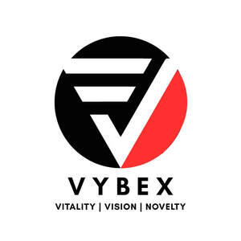

Trade Mark Journal No.2025/021 23 May 2025
UK00004201362 9 May 2025 (16)

- Class 16
- Stationery; Manifolds [stationery]; Stapling guns (Electric -) for stationery use; Protractors [for stationery and office use]; Automatic paper clip dispensing machines for office or stationery use; Stapling guns (Hand-operated -) for stationery use; Pads [stationery]; Paper stationery; Birthday cards; Anniversary cards; Gift cards; Christmas cards; Occasion cards; Holiday cards; Cards; Invitation cards; Greeting cards; Dinner mats of card; Picture cards; Gift wrap cards; Birthday books; Musical greeting cards; Greetings cards; Name cards; Post cards; Announcement cards [stationery]; Announcement cards; Note cards; Musical greetings cards; Pop-up greetings cards; Paper boxes for storing greeting cards; Paper loyalty cards; Place cards; Card files; Printed recipe cards; Trivia cards; Printed cards; Table mats of card; Baseball cards; Visiting cards; File cards; Business cards; Social note cards; Blank cards; Filing cards; Menu cards; Flash cards; Collectable cards; Packaging boxes of card; Scoring cards; Plastic baseball card holders; Record cards; Credit card imprinters, non-electric; Imprinters (Credit card -), non-electric; Index cards [stationery]; Blank note cards; Correspondence cards; Blister cards; Desktop business card holders; Paint boxes [articles for use in school]; Office stationery; Office staplers; Office machines; Office binders; Binders for the office; Office requisites; Office perforators; Seals for the office; Office seals; Glues for the office; Office glues; Glue for the office; Stationery (Cabinets for -) [office requisites]; Cabinets for stationery [office requisites]; Office paper stationery; Staplers [office requisites]; Files [office requisites]; Desktop cabinets for stationery [office requisites]; Staplers for office use; Machines for office use in addressing mail; Staplers [office machines]; Binders (office supplies); Binders [office supplies]; Punches [office requisites]; Pens [office requisites]; Machines for office use for stamping mail; Finger-stalls [office requisites]; Binders for office use; Office lettering machines; Fingerstalls being office requisites; Office labeling machines; File sorters [office requisites]; Office decollating machines; CD shredders for home or office use; Staplers for offices; Fingerstalls for office use; Machines for office use for sorting documents; Staples [office requisites]; Collators for office use; Moisteners [office requisites]; Imprinters for office use; Office requisites, except furniture; Paper racks [office requisites]; Badge holders [office requisites]; Office labelling machines; Office paper drill machines; Paper creasers [office requisites]; Franking machines for office use; Magnetic boards being office requisites; Office perforating machines; Letter inserter machines for office use; Paper shredders for office use; Handheld label printers [office requisites]; Machines for office use for folding documents; Document laminators for office use; Laminators (Document -) for office use; Name badges [office requisites]; Glues for office use; Name badge holders [office requisites]; Hole punches [office requisites]; Paper embossers [office requisites]; Staplers (Electric -), for office use; Cutters (Paper -) [office requisites]; Paper cutters [office requisites].
T & D ESSENTIALS UK LTD